摘要：数据结构中，线性结构有数组、字符串、链表，栈和队列、哈希表，非线性结构有堆、树、二叉树、图。
[TOC]
线性数据结构：数组（字符串）、链表、栈和队列、哈希表；
非线性结构有：堆、树、二叉树、图。
顺序表，支持随机访问。
int[] arr = new int[5]; // 声明 + 动态初始化，程序员指定数组长度，由系统初始化每个元素的默认值，此处 int 默认值为0
int[] num = new int[]{1, 2, 3, 5, 8}; // 一般不用，用于刷题返回值
int[] num = {1,2,3,5,8}; // 声明 + 静态初始化，程序员显式指定每个元素的值，由系统决定数组长度
int n = nums.length; // 数组的属性
int n = str.length(); // String 对象的方法
List<Integer> list = new ArrayList<>();
int n = list.size(); // 泛型集合的方法，Vector、List等
// 与index无关的可用for-each
for(char ch : str) {}
// 交换函数，交换数组中两下标位置的元素，必须通过引用来交换，不能直接进行交换
public static void swap(int[] a, int i, int j) {
int t = a[i];
a[i] = a[j];
a[j] = t;
}
public static void main(String[] args) {
int[] a = { 1, 2, 3, 4, 5 };
swap(a, 0, 3); // 传入数组的引用，交换下标 0 和 3 位置的数据
System.out.println(a); // 打印数组的地址，I@1b6d3586
System.out.println(Arrays.toString(a)); // 打印数组所有元素的真正方法，[4, 2, 3, 1, 5]
}
public static void swap(T[] arr, int i, int j) {
// Need to add null check and index checks
List list = Arrays.asList(arr);
Collections.swap(list, i, j);
arr = (T[]) list.toArray(); // 刷题返回值，强制类型转换为数组
}
nSum：取出数组中 n 个数， 相加之和为 target。
HashMap<nums[i], i>。注意return new int[]{i, j}; return new int[0];；也可用 HashMap<target - nums[i], i>。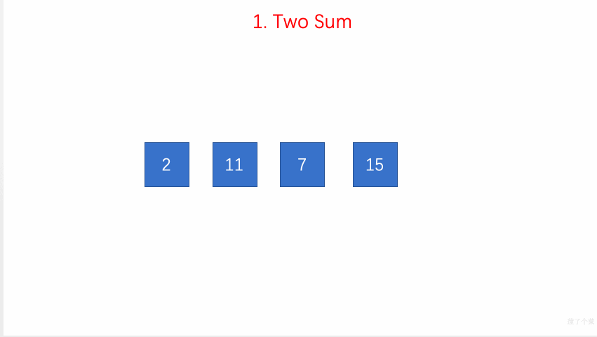
target 的所有元素对，结果不能出现重复。思路就是交换排序 + 双指针，sum = nums[lo] + nums[hi], 若sum > target 则hi--, 若sum < target 则lo++；注意跳过重复元素对。
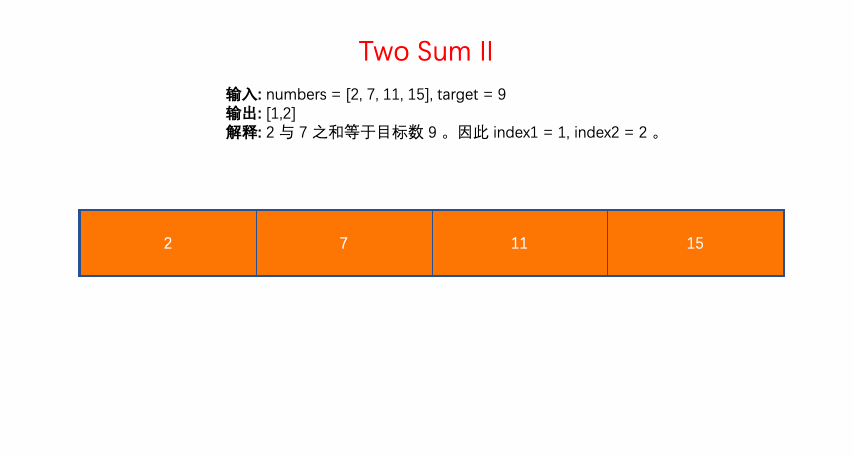
List<List<Integer> > nSubSum = nSum(nums, n-1, i+1, target-nums[i]); 表示从 i+1 位置开始求 (n-1)Sum，加上 nums[i] 即为 nSum 的结果。前缀和技巧：preSum[i] = sum(nums[0, ..., i-1])，表示前 i-1 项的累加和。
主要用于：快速计算一个区间内的元素和。
主要适用场景是：不修改原始数组的情况下，频繁查询某区间的累加和。时间复杂度降为 O(1)。
private int[] preSums;
preSums = new int[n + 1];
this.preSums[0] = 0; // 默认为0，可不显式设置
// 构造前缀和
for (int i = 1; i <= n; i++) { // i = 1
// 表示[0, i-1]位置的累加和
preSums[i] = preSums[i-1] + nums[i-1]; //注意 i-1
}
nums[left, ..., right] 求和，即 preSums[left+1, ..., right+1]，通过 preSums[right+1] - preSums[left]。
preSum[0][0] = 0; preSum[i+1][j+1] 记录 matrix 中的子矩阵 [1, 1, i, j] 的元素累加和，i, j > 0。
差分数组主要适用场景是：频繁对原始数组某区间的元素值进行增减。类似环比。
主要用于：快速修改整个区间的元素。
diff 数组：diff[0] = nums[0]，diff[i] = nums[i] - nums[i-1]，表示相邻元素间的差值。
nums[i] = nums[i-1] + diff[i]。nums[i..j] 的元素全部加 3，只需让 diff[i] += 3，再让 diff[j+1] -= 3 即可。
见二分查找
target 大则向上 row--，小则向右 col++；用二分查找效率低。类似二叉查找树。前后相向双指针、左右指针

while(l < r)。m + n。用于归并排序。234.判断回文链表 ：找链表中点，见回文链表、链表快慢双指针
fast = 1; 快指针与慢指针值不同时，将快指针的值附到慢指针后 if(nums[slow] != nums[fast]) nums[++slow] = nums[fast]（与第一种方法思想不同，实现代码类似）。slow 指向结果数组的最后一项，fast 指向（后续数组中）不重复的第一项，故要先 ++slow 。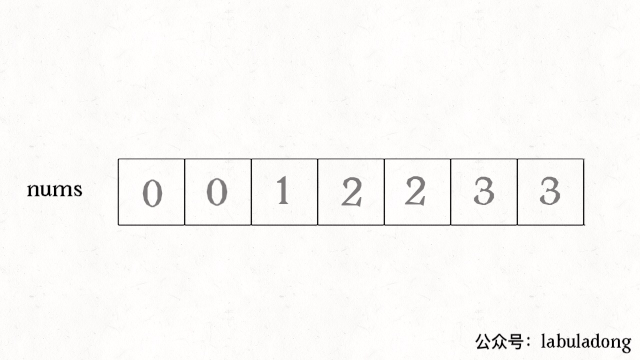
27.原地移除元素：不需单调数组，快指针不为某值时覆盖慢指针。fast = 0; if(nums[i] != val) nums[slow++] = nums[fast];
int p = removeElement(nums, 0)，返回 p 为移除 0 之后的数组长度；把 p 及其后元素都置为 0，即相当于移动所有 0 到最后。【】见下字符串中。
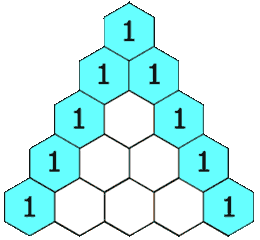
insert set 容器 record 存储 a1 的元素，遍历 a2 find 查找是否有相同的元素，如果有，用 set 容器 resultSet 进行存储，用 iterator 将 resultSet 转换为 vector 类型。【】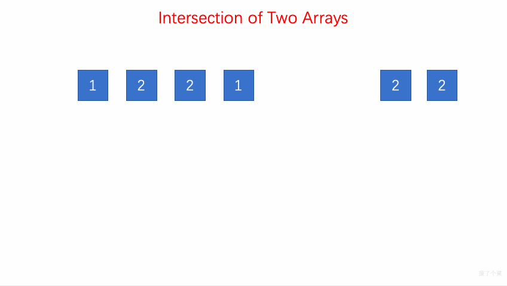
Java 对字符串的处理较麻烦，见常见类 String 类的常用方法。
方法一、用数组等能找到前驱的数据结构来实现：
[i, i]、[i, i+1] 为回文中点的子串；l 和 r ，向两侧（背向双指针）扩散（遍历判断），l == r 时回文子串长度为奇数。"bbbb"是字符串"bbbgb"的子序列但不是子串。 // 1. 判断
// 2. 获取以 s[lo, hi] 为中心的最长回文串，也可用于判断
String palindrome(String s, int lo, int hi) {
// 防止索引越界
while (lo >= 0 && hi < s.length() && s.charAt(lo) == s.charAt(hi)) {
lo--; // 背向双指针，由中心向两端扩散
hi++;
}
// 返回以 s[初始lo，初始hi] 为中心的、最长回文串[lo+1, hi)
// lo == hi 时，回文串长度为奇数
return s.substring(lo + 1, hi);
}
方法二、用链表来实现：
判断全串是否回文：234.判断回文链表 对称链表，经典例题。
O(1)。左右指针技巧中，把索引左闭右开的区间 [left, right) 称为一个「窗口」，长度为 right - left。方便边界处理， [0, 0)中没有元素，[0, 1)中有一个元素 0。
滑动窗口：保证每个窗口里字母都是唯一的。双指针的一种，大多与不重复字符有关。
核心思想：维护一个左闭右开的窗口，不断滑动，左右指针交替前进（ 不回头 ），更新答案。
O(n)，因为每个元素都只会进入和被移出窗口一次。滑动窗口4类经典例题：
3.无重复字符的最长子串：当 window 内出现重复字符（HashMap 中已有当前字符）时，则调整左边界 left = Math.max(window.get(ch) + 1, left)（val 为字符对应的窗口结束位置，+1表示被重复字符的右侧）；调整（右移并更新） right 边界，更新子串及其长度；O(N)
剑指 Offer 48.最长不含重复字符的子字符串：也可用动态规划，但为N^2。如 subDp[i] 表示 [0, i] 区间内最长不含重复字符的子串，subDp[i] = Math.max(subDp[i-1], longestSub)，从 i 不断向前遍历可得到 longestSub = (j, i]，表示以 i 索引位置结尾的不含重复字符的最长子串。
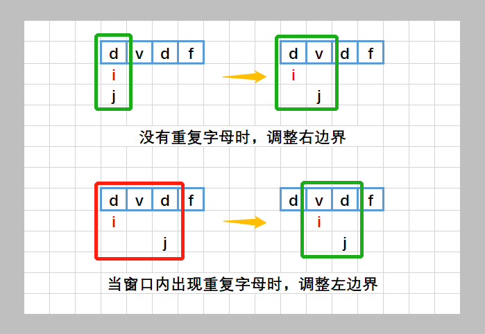
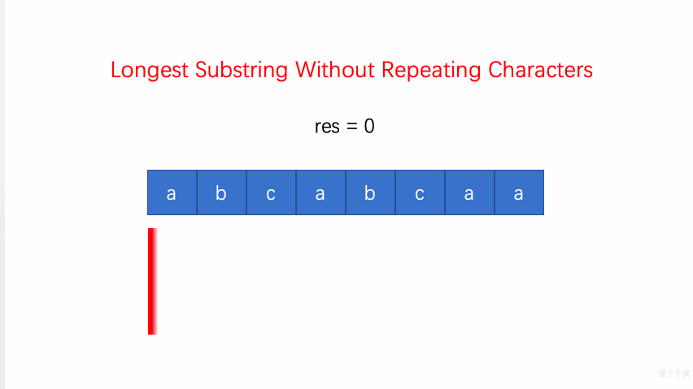
最小窗口：76.最小覆盖子串：包含Target所有字符的、当前字符串Source的最短子串；
步骤：十分经典的 HashMap 代码
need 和 window 相当于计数器，分别记录 T 中（需凑齐的）字符数量和窗口中对应字符的出现次数；寻找可行解：先不断增加 right 指针扩大窗口 [left, right)，直到窗口中的字符串符合要求（包含了 T 中所有字符）；
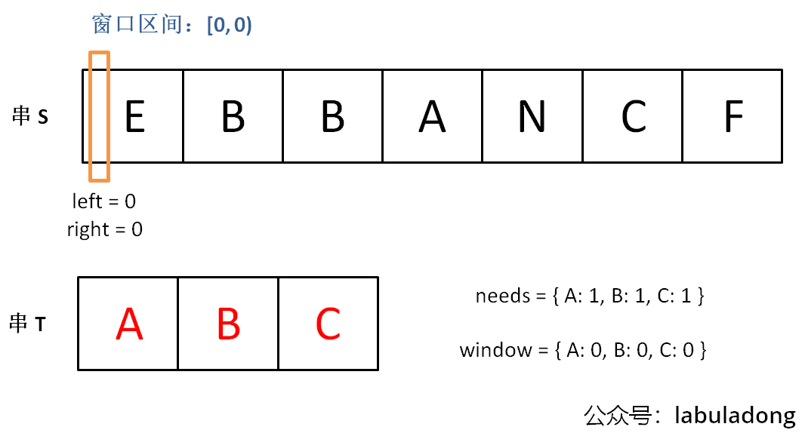
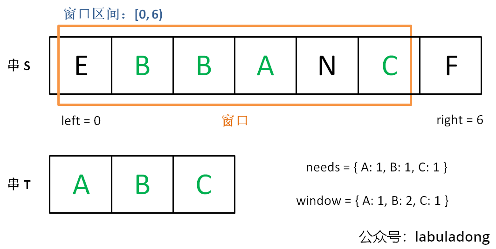
left 指针缩小窗口，更新窗口的起始索引及长度，直到窗口不再符合要求（不包含 T 中所有字符）。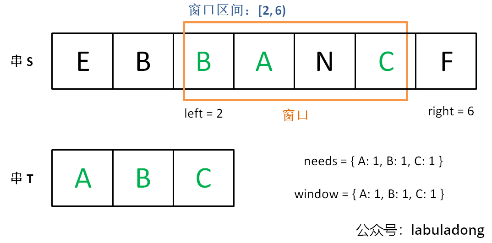
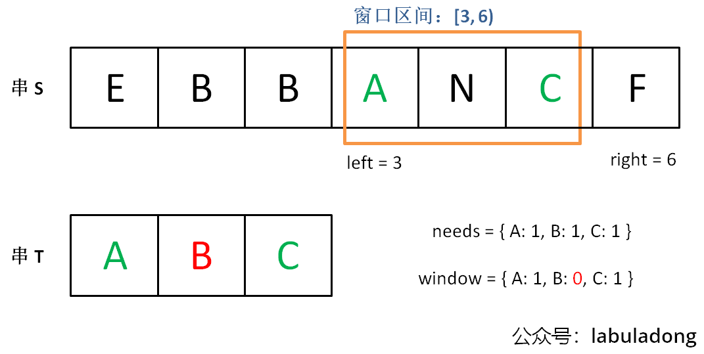
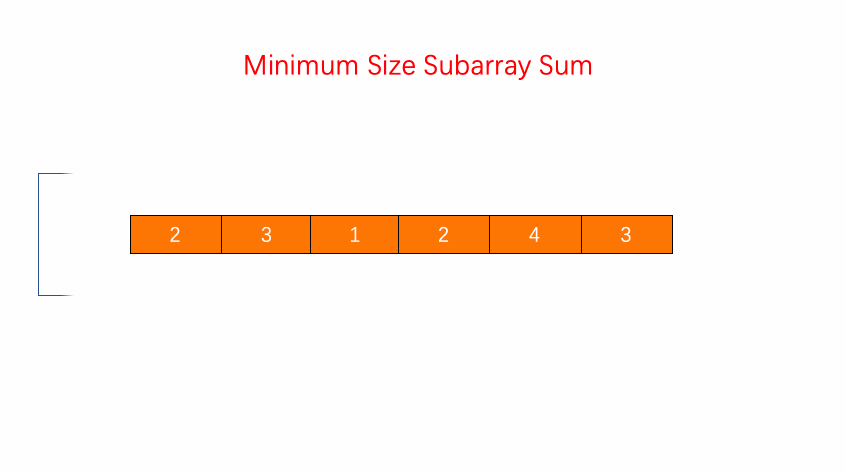
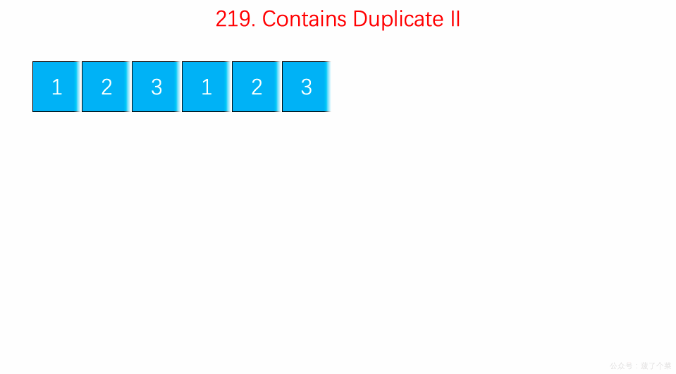
滑动窗口框架：
/* 滑动窗口算法框架 */
void slidingWindow(string s, string t) {
// 字符最后一次出现的位置，用map记下每个字符的索引，直接进行跳转
Map<Character, Integer> window = new HashMap<>();
// needs 和 window 相当于计数器，分别记录 T 中字符出现次数和窗口中对应字符的出现次数。
Map<Character, Integer> need = new HashMap<>();
for (char key : t.toCharArray) { // need.keySet()) {
// 不存在则初始化为0，存在则+1
need.put(key, map.getOrDefault(key, 0) + 1);
}
// 表示窗口中满足need条件（包含的T中字符）的个数，valid == need.size 说明窗口已完全覆盖了 T
int valid = 0;
for (int left = 0, right = 0; right < n; right++) { // 大多数解法用while，不理解
// 准备移入窗口的字符
char inCh = s.charAt(right);
// 扩大窗口的更新操作
...
// debug 输出窗口的区间位置
// System.out.printf("[" + left + ", " + right + ")");
// 判断左侧窗口是否要收缩
while (window 仍满足条件) {
// 判断是否完全覆盖子串
// 准备移出窗口的字符
char outCh = s.charAt(left);
// 缩小窗口，并更新操作，与扩大对称
left++;
...
}
}
}
String 类的常用方法：见 String 类；
统计字符串中每个字符出现的频率：
出现次数最多字符
""；剑指 Offer 05.替换空格：常规方法为遍历 charAt(i)；
StringBuffer res = new StringBuffer();
return res.toString();
// 将char转为String，并比较
String.valueOf(ch).equals(” “)
str.replaceAll(”\\s“, ”%20“); // 模式匹配
str.replace(” “， ”%20“);
简化复杂 url
14.字符串数组的最长公共前缀：先用 Arrays.sort(strs) 为字符串数组升序排序，再从前往后遍历、对比第一个和最后一个字符串的字符。
StringBuffer ans = new StringBuffer();
while (i >= 0 || j >= 0 || add != 0) {
int x = (i >= 0) ? num1.charAt(i) - ’0‘ : 0;
}
// 答案需翻转
ans.reverse();
s 按空格 split 成若干单词，然后 reverse ，把单词 join 成句子。用了额外的空间。s 反转，然后将每个单词分别反转再 join()；join()。剑指 Offer 58-II.左旋转字符串：字符串前 n 位原地移动到尾部；
StringBuilder()，用 i 遍历 [n, len + n] ，取余 i % len。“暴力搜索”会反复回溯主串，导致效率低下，而 KMP 算法可利用已遍历部分匹配这个有效信息（部分匹配表），保持主串上的指针不回溯；通过修改子串的指针，让模式串尽量移动到有效的位置。
O(m + n) ，空间复杂度也只有 O(m)。
根据部分匹配表（next 数组），最后一个匹配字符B（在已匹配的字符串中）对应的”部分匹配值”为2。移动位数 = 已匹配的字符数 - 对应的部分匹配值。
"ABCDA"的前缀为[A, AB, ABC, ABCD]，后缀为[BCDA, CDA, DA, A]，共有元素为"A"，长度为1；"AB"，”部分匹配值”就是 2（”AB”的长度）。搜索词移动时，第一个"AB"向后移动4位（字符串长度-部分匹配值），就可来到第二个”AB”的位置。数组 VS 链表 、ArrayList VS LinkedList。链表相关的题目套路比较固定，主要是双指针技巧。
指针：Java 语言中不存在指针，但可理解为引用。
指针丢失：指针没有明确指向。
内存泄漏：结点不判空就操作 next 域等，导致空指针异常。
头结点：在单链表的第一个结点前附加一个结点，称为头结点。头结点的 Data 域可为空，仅包含 next 域；也可记录表长等信息。
头指针：指向链表的第一个节点，通常用来标识一个链表，如单链表 L。
null（Java 区分大小写，且所有关键字都是小写）时表示一个空链表。next 域为 null 时为空链表。优点：统一头/非头节点、空/非空链表的操作。
// 通常在链表头部加入哨兵(作为头结点)，使删除的代码保持一致，不用额外考虑删除第一个节点的情况
// 虚拟头结点技巧，插入 dummy 哑节点，用dummy.next表示真正的头节点，可避免处理头节点为null的边界问题
ListNode dummy = new ListNode(-1);
dummy.next = head;
....
return dummy.next;
判断边界 / 特殊情况:
单链表大部分都适用数组快慢双指针技巧。
// 快慢指针初始化指向 head
ListNode slow = head, fast = head;
n - k + 1 个结点，但 n 无法直接得到（计算链表的 length、栈），可用快慢双指针；注意 k > n 时应返回 null。
876.链表的中间结点：慢指针走一步，快指针走两步。while (fast != null && fast.next != null)。偶数返回第一个节点。
k + 1 个结点的引用，删除后继结点；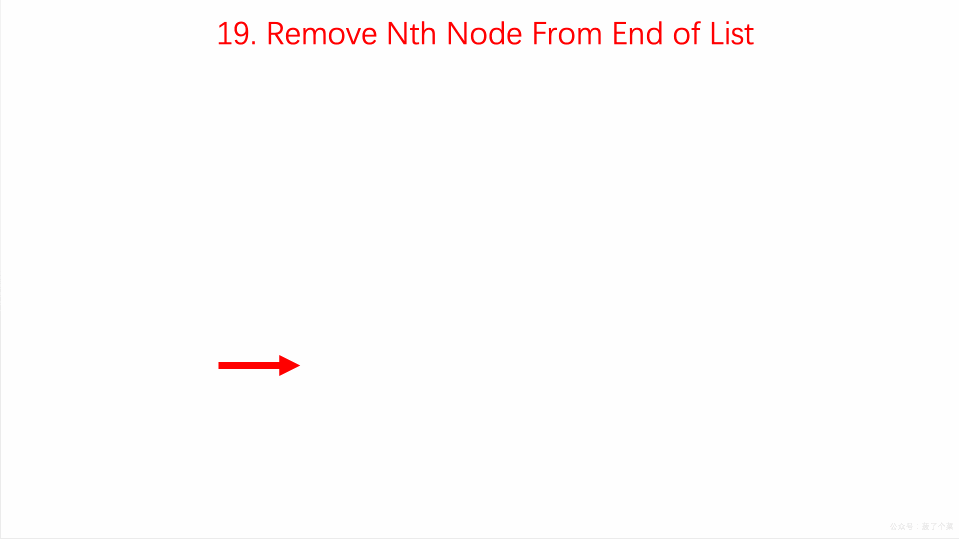
// 删除倒数第 k 个，要先找倒数第 k + 1 个节点
ListNode pre = findKthFromEnd(dummy, k + 1);
判断回文链表：见字符串中的回文串；
slow 和 fast 指针相遇即有环；【】
142.环形链表 II 找环起点： 遍历 fast 直到链表尾部，fast 为 slow 的两倍速迟早会追上，fast、slow 相遇（位置一定在环内）即跳出循环；无环则 fast、slow 将相继到达链表尾部，相遇时均为 null；有环则 fast 指针在环内， slow 以 head 为起点重新开始，fast、slow 第二次相遇即为环起点；环起点不一定在 head；
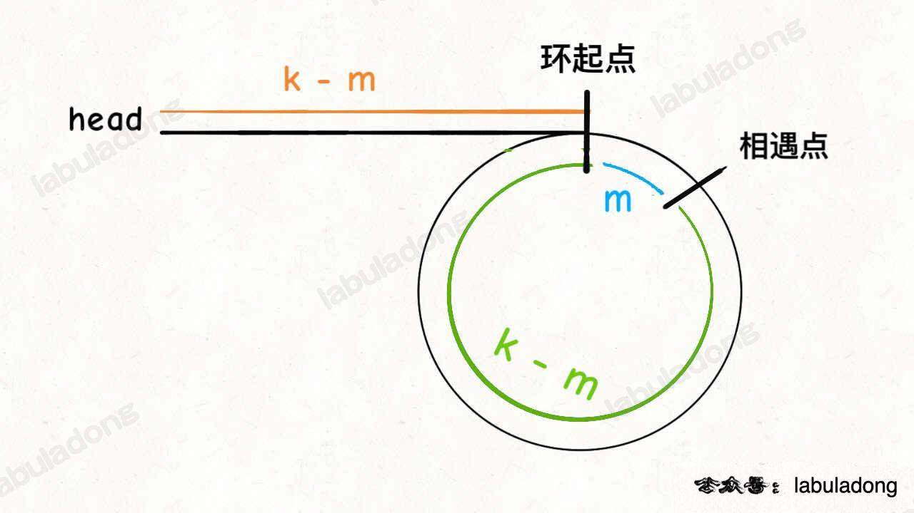
160.相交链表：判断两单链表是否相交；【】
剑指 Offer 52.两链表的第一个公共节点：找出交点（第一个公共结点）；
HashSet 记录一个链表的所有节点，和另一条链表对比，缺点是需额外空间；pa 遍历完链表 A 后开始遍历链表 B，if (pa == null) { pa = headB;}，pb 遍历完链表 B 后开始遍历链表 A，此时二者长度相等，且 pa 和 pb 能同时到达相交节点 c。空间复杂度 O(1)。fast 指针先走，使 p1 和 p2 到达尾部的距离相同，p1 == p2 且不为空时即相交。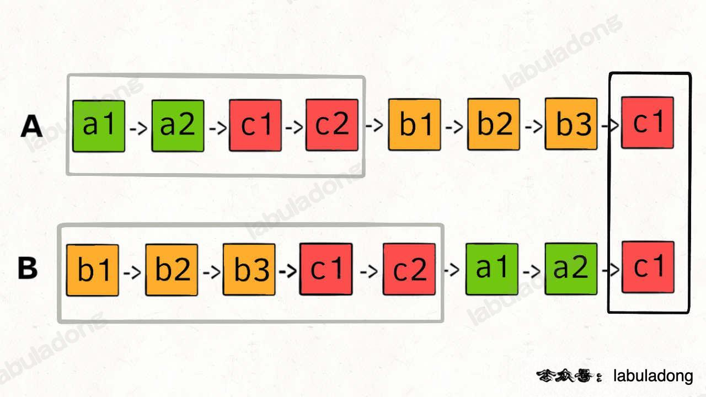
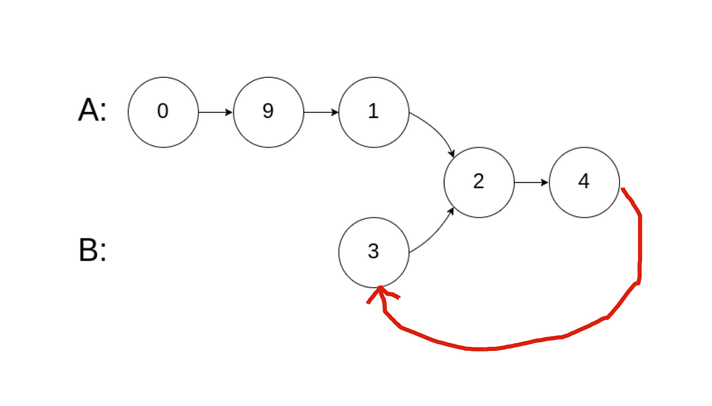
剑指 Offer 25.合并两个排序的链表：拉链法 / 归并法 （2-路）归并排序
// 虚拟头结点
ListNode dummy = new ListNode(-1);
// 合并后l1、l2最多只有一个非空，直接将链表末尾指向未合并完的链表
p.next = (l1 == null) ? l2 : l1;
链表整数位运算
2.逆序链表按位表示整数 两数逐位相加 链表求和：carry 表示进位；
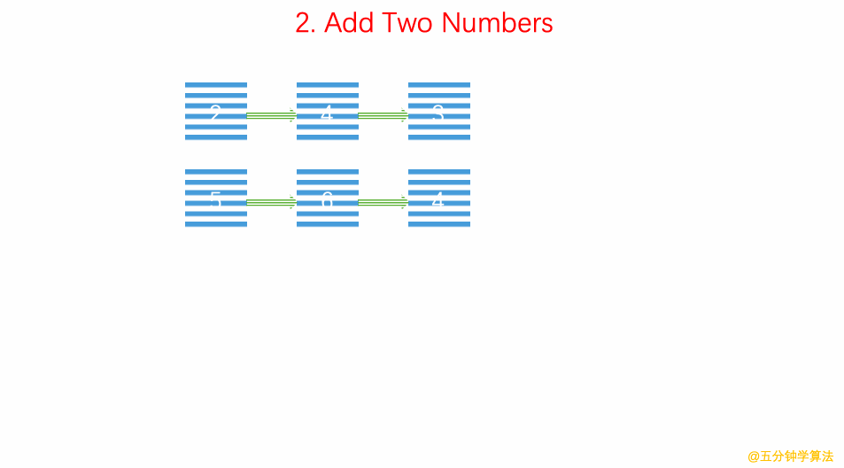
328.拆分链表的奇偶节点：odd、even 奇偶双指针交替前进；even.next 不能为空；odd.next = evenhead；
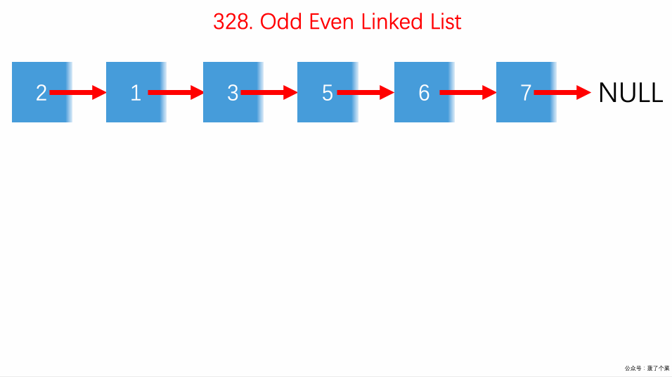
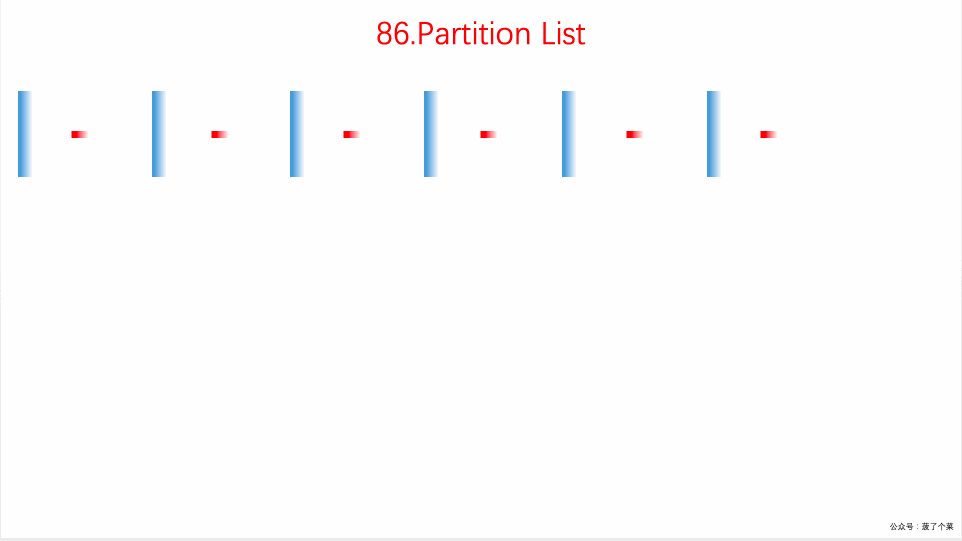
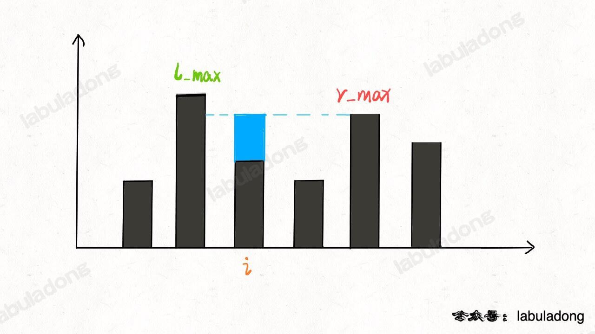
water[i] = min(
# 左边最高的柱子
max(height[0...i]),
# 右边最高的柱子
max(height[i...end])
) - height[i]
O(1)；递归：
25.K 个一组翻转链表：reverseKNode 原地反转 [head, tail) 区间的元素，递归反转后续链表并连接起来。
K = 2 的特殊情况，可用简化的多指针；【】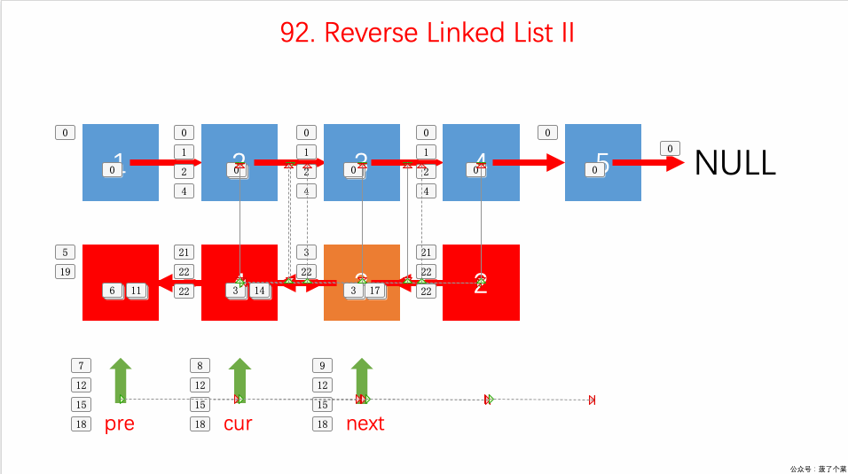
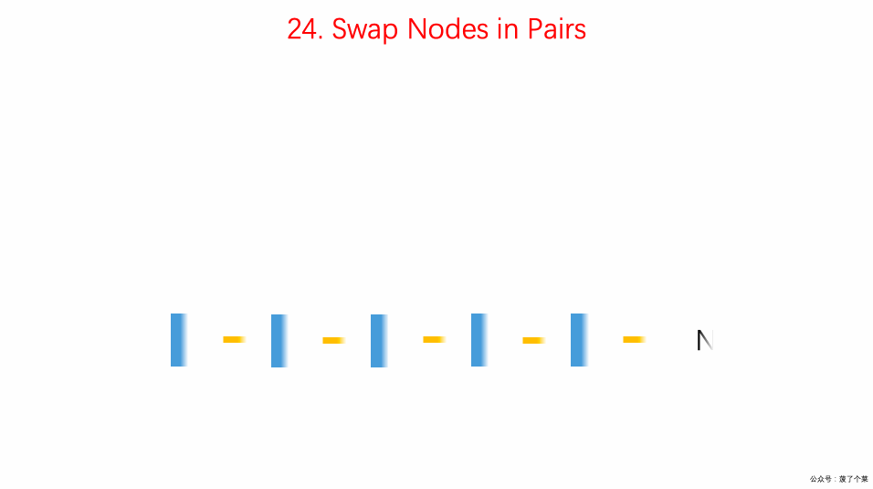
剑指 Offer 35.复杂链表的深拷贝 random 指针：
237.删除链表中的特定节点：不给头结点，只给要被删除的节点；前后节点交换值，删后继。【】
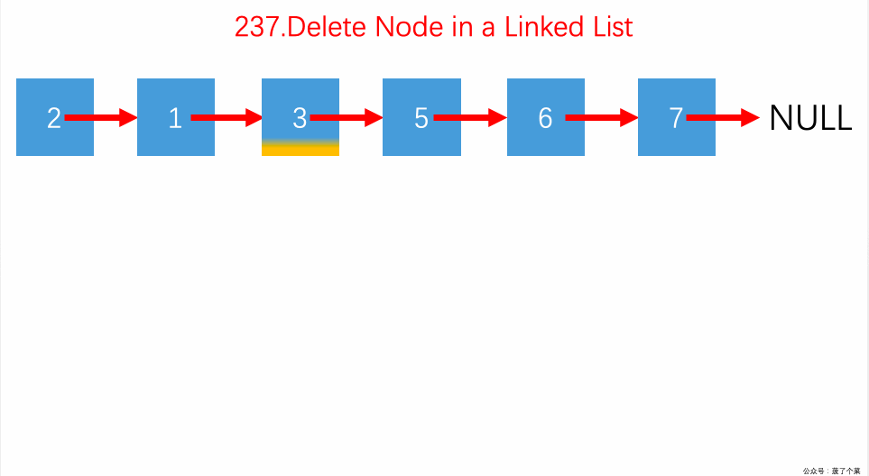
/* 迭代遍历单链表 */
for (ListNode p = head; p != null; p = p.next) {
}
/* 递归遍历单链表 */
void traverse(ListNode head) {
if (head == null) {
return;
}
// 前序位置
traverse(head.next);
// 后序位置
/* 倒序打印链表元素 */
print(head.val);
}
跳表（Skip List）：基于链表实现的有序列表，使得包含n个元素的有序序列的查找和插入操作的平均时间复杂度都是 O(logn)，优于数组的 O(n)复杂度。对并发友好。
实现：快速的查询效果是通过维护一个多层次的链表（ConcurrentSkipListMap）实现的，实现了快速查询效果将平均时间复杂度降到了O(logn)。这是一个典型的用空间换时间数据结构。
缺点：就是“以空间换时间”方式存在一定数据冗余。
应用：Redis中的有序集合对象的底层数据结构就使用了跳表。
栈常用一维数组或链表来实现：
Deque<Integer> stack = new LinkedList<>();
stack.push(1);
Integer x = stack.pop();
Stack<Character> stack = new Stack<>();
队头（front）出队，队尾（rear）入队；
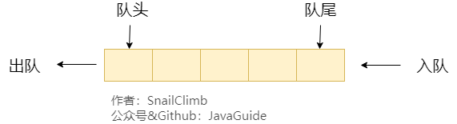
顺序队列（数组实现）：存在“假溢出”的问题（即明明有位置却不能添加）。因为在数组中 front 和 rear 会持续向后移动，无法返回数组起始位置，数组长度固定，导致数组越界、前端有大段空白。
front == rear ；rear - front == QueueSize；循环队列：可解决假溢出和越界问题。
front == rear ，排除队列溢出的情况；队列满： (rear + 1) % QueueSize == front，即 rear 在 front 前一个位置 。
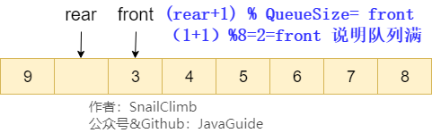
链式队列（链表实现）
常用于：
集合框架，用于实现栈和队列。
出队顺序按照优先级的队列；常用于找最值，往往用二叉堆来实现。用于有动态添加、删除数据且需获得最值的场景。手撕算法典型题包括：
要理解以下关键点：
O*(log*N)，底层使用二叉堆实现。swim, sink，用来维护二叉堆的性质。至少需支持下述操作：
poll/pull_highest_priority_element）；其它可选的操作：
单调栈：每次新元素入栈后，栈内的元素都保持有序。用途不广，只处理一类典型的问题。
单调队列：普通队列 + api，用于快速计算整个队列的最大/最小值。
queue() 构造：new 新栈 stackIn（s1）和 stackOut（s2）；push/offer/add）：stackIn.push(x)入栈；stackOut 为空，则stackIn 全部倒入 stackOut；栈顶 top() 即为队头；pop/poll/remove）：先调用 peek() 保证 stackOut 非空，stackOut出栈；出队结束，stackIn 为空也不必重新倒回；isEmpty() 判空：stackIn 和 stackOut 均为空。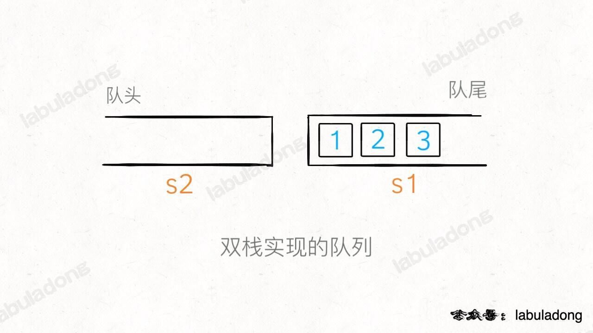
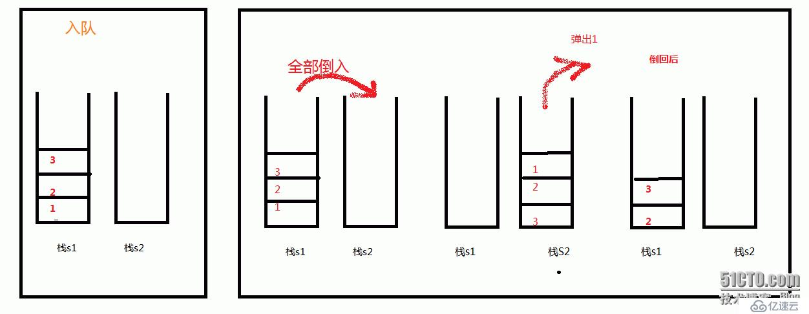
stack()构造：sz = 0，重新塞入时用于计数；push(x) 入栈：queue.offer(x)入队；或维护 topElem = x 栈顶元素，x 是队列的队尾，是栈的栈顶 topElem；pop() 弹出栈顶：把队尾元素移到队头（把队尾前的所有元素出队再重新塞到队尾，顶过去），原队尾（现队头）poll()出队；或返回 topElem，更新 topElem 为新队尾元素；top() 查看栈顶：调用 pop() 弹出队尾元素（栈顶元素）后恢复（把队尾元素再次塞入队尾），sz++；isEmpty() 判空：queue.isEmpty()。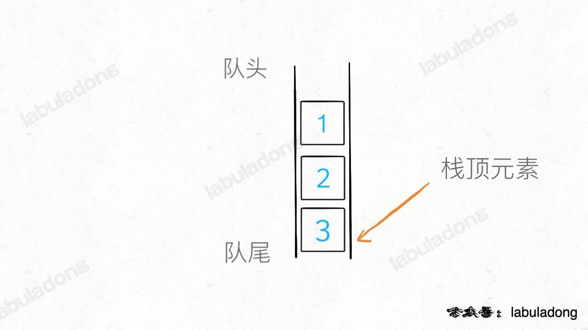
20.判断有效的成对括号：Stack 保存所需的右括号 + HashMap 存左右括号对应关系方便查表，若 ch 为左括号，则将对应右括号入栈，若为右括号，则与栈顶元素对比；
( 或 )，need 变量记录对右括号的需求数，( 则 need++，) 则 need--；当 need == -1 时，意味着遇到一个多余的右括号，显然需插入一个左括号。depth++ 时，更新 maxDep = Math.max(maxDep, depth)；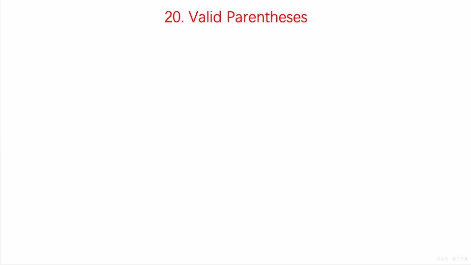
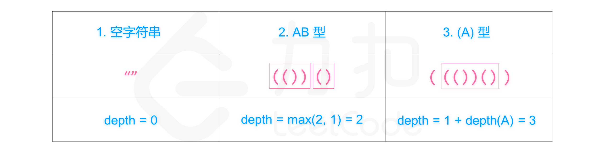
中缀表达式->后缀：根据中序结果构造二叉树，打印后序结果；
bool[] inStack 布尔数组保证栈中元素不重复；count 不断 pop 掉不符合最小字典序的字符。哈希表和常说的 Map（键值映射）是不是同一个东西？不是。
哈希表、散列表（Hash Table）：用于存储键值对。
原理：哈希表的本质是数组 + 哈希函数。通过散列函数把键映射到一个数组（散列表）里，得到数组的索引，进而直接访问（快速存取）索引位置的值。+ 解决哈希冲突。
key，输出也必须要相同，这样才能保证哈希表的正确性。
缺点：
哈希冲突、哈希碰撞：不同的 key 通过哈希函数可能得到相同的索引值。
哈希冲突是否可以避免？
哈希冲突不可能避免，只能在算法层面尽量处理。
哈希冲突是一定会出现的，因为这个 hash 函数相当于是把一个无穷大的空间映射到了一个有限的索引空间，所以必然会有不同的 key 映射到同一个索引上。
解决方法：JDK1.8 前 HashMap 用链地址法解决，JDK1.8 后 HashMap 用红黑树（数组 + 二叉树）；
value 类型，而是存储一个链表，当有多个不同的 key 映射到了同一个索引上，这些 key -> value 对儿就存储在这个链表中。需额外的空间存指针。
负载因子、装载因子（load factor）：已插入元素的数量除以数组容量。用于衡量哈希冲突的严重程度，也常作为哈希表扩容的触发条件，装载因子超过某一阈值时就进行扩容。
哈希表扩容时：缺点、过程
为此，编程语言通常会预留足够大的哈希表容量，防止频繁扩容。
key 是唯一的，value 可以重复哈希表中，不可能出现两个相同的 key，而 value 是可以重复的。
直接类比数组就行
因为哈希表底层就是操作一个数组，其主要的时间复杂度来自于哈希函数计算索引和哈希冲突。
key 类型，比如用 ArrayList 作为 key ，那么哈希表的复杂度就会退化成 O(N)。哈希表中键的遍历顺序是无序的，不能依赖哈希表的遍历顺序来编写程序。
两个原因：
key 进行映射，所以 key 在底层 table 数组中的分布是随机的，不像数组/链表结构那样有个明确的元素顺序。key所谓不可变类型，就是说这个对象一旦创建，它的值就不能再改变了。比如 Java 中的
String, Integer等类型。
key 的哈希值会变化，会导致键值对意外丢失，产生严重的 bug。O(n)；++，遇到不同元素则 --，空间O(1)【】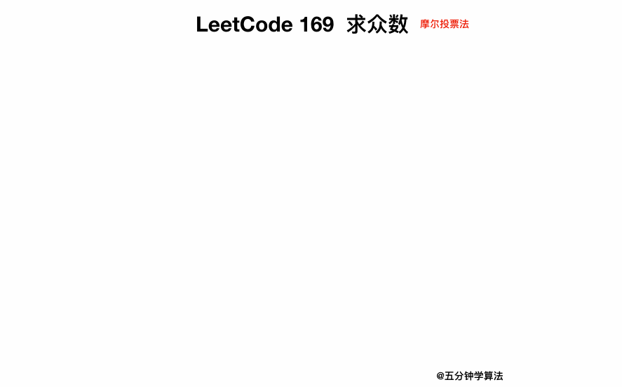
堆是一种树，任意一个节点的值都 >=（或 <=）其所有子节点的值。
用途：用于只关心最值：多次插入数据或 pop 最值后，再多次获取剩余元素的最（最大或最小）值（插入/删除 + 全体排序耗费资源太多）。
相对于有序数组，堆的主要优势在于更新（插入或删除）数据效率较高。
nlg(n)；O(1)；O(n)，二分法为 lg(n) + 移动数据 O(n) ；堆为lg(n)。通常用完全二叉树的形式来表示、存储堆。也不一定全都是完全二叉树，如斐波那契堆和二项堆。
用数组存储二叉树既节省空间，又方便索引。
PriorityQueue<Integer> pq = new PriorityQueue<>();
pq.offer(e); // 插入堆
int e = pq.poll(); // 删除/弹出堆顶元素
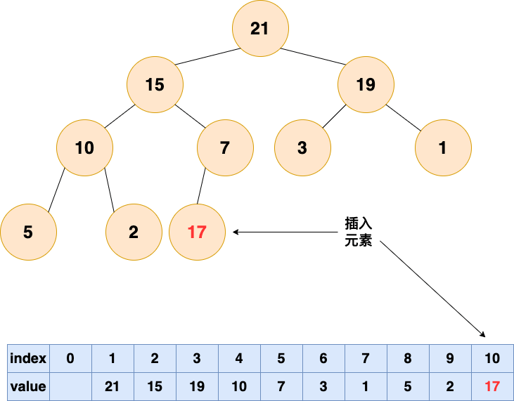
删除（弹出）堆顶元素后，为了保持堆顶元素为最值的性质，需调整堆的结构，称为”堆化“。


PriorityQueue：实现大小为 k 的最小（默认）堆，
k 个元素（维持堆的大小为 k），堆顶（最小元素）即第 k 大的元素；即 [347] 中的思路；k 个元素；占用额外空间；常规思路：实现最大堆，弹出第 K 个元素；
// 默认创建最小堆，设置大小为k
PriorityQueue<ListNode> pq = new PriorityQueue<>(k, (a, b) -> {
return a.val - b.val;
});
// 改造为最大堆
PriorityQueue<Integer> pq = new PriorityQueue<>(k, (a, b) -> (b - a));
PriorityQueue<Integer> pq = new PriorityQueue<>(new Comparator<Integer>() {
@Override
public int compare(Integer a, Integer b) {
return map.get(a) - map.get(b);
}
});
347.前 K 个高频元素：最小堆，借助 哈希表 来建立数字和出现次数的映射，遍历一遍数组统计元素的频率：
最终，堆中的 k 个元素即为前 k 个高频元素。
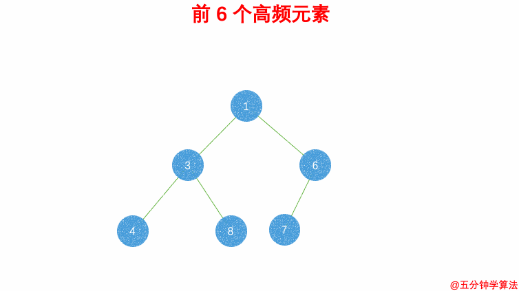
23.合并K个升序链表 ：将k条链表的头结点加入最小堆（用PriorityQueue 优先级队列实现）进行节点排序，选取堆顶元素；不断将链表的剩余节点加入最小堆。
pq 中的元素个数最多是 k，一次 poll 或 add 方法的时间复杂度是 logk；所有节点都会被加入和弹出 pq，整体是 Nlogk，其中N 是所有链表的节点总数。
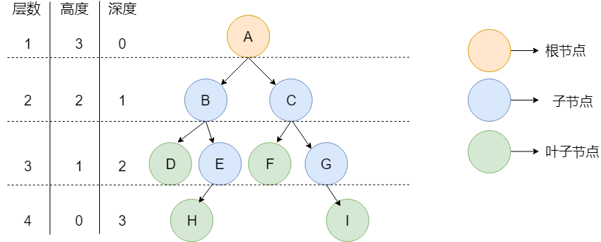
/* 基本的 N 叉树节点 */
class TreeNode {
int val;
TreeNode[] children;
}
树的 DFS/BFS 遍历算法
// 多叉树遍历框架
void traverse(TreeNode root) {
if (root == null) return;
for (TreeNode child : root.childern) {
// 前序位置，在进入节点前执行的操作
traverse(child);
// 后序遍历的操作
}
}
root、p、q 的关系递归；235.二叉搜索树的最近公共祖先【】树中的概念：

Huffman树（霍夫曼树、哈夫曼树、最优二叉树、最优树）：在含有 N 个带权叶子结点的二叉树中，其中带权路径长度（WPL）最小的二叉树。

略。
Huffman编码：由Huffman树生成的二进制前缀编码。
前缀编码：即一个字符的编码不是另一个字符编码的前缀。
优点：增删改查性能都很好；
缺点：斜树，瘸子；因此发展出变体满二叉树、完全二叉树。
二叉树的习题分为三大部分：
满二叉树：二叉树每层（第 k 层，深度为 k-1）的结点数都达到最大值 2^(k-1)^，即结点总数是(2^k^) -1。
完全二叉树：最后一层若不满则缺少的节点都在右边，其余层都是满的。性质：父子节点的序号有对应关系。
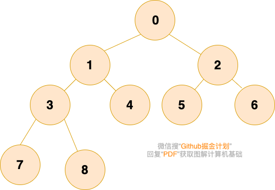

BST 树（Binary Search Tree、ordered binary tree、sorted binary tree）：
性质：
O(h+1)，h为树的高度/深度，最好（即平衡二叉树）为 O(lgN)，最坏（斜树）为 lgN；lgN 降为 O(N)；因此引入平衡二叉树。经典题目：
while 循环即可；mid 位置的元素构造当前 root 节点，递归创建左右子树；【】
平衡二叉树、AVL 树（）：除了空树，每个节点的左右子树都是一棵平衡二叉树、且高度差的绝对值不超过1。常用实现方法有 红黑树、替罪羊树、加权平衡树、伸展树 等。
红黑树（自平衡二叉查找树、对称二叉 B 树）：一篇漫画告诉你–什么是红黑树？
NIL/null）都是黑色；O(lgN) 时间内完成查找、插入和删除。TreeMap、TreeSet 及 JDK1.8 的 HashMap 底层都用到红黑树。左旋算法：父节点被自己的右孩子取代。
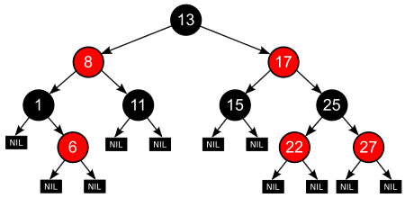

B+ 树（B 树的变形）：用于数据库索引的实现。是一种红黑树，也是一种 BST 二分查找树？
B 树 VS B+ 树：
B 树的所有节点存放键和数据，而 B+ 树只有叶子节点存放key 和 data，其他非叶子节点只存放 key。B 树的叶子节点是独立的；B+ 树的叶子节点有引用链指向相邻的叶子节点。B 树的检索相当于对节点的关键字做二分查找，可能不到叶子节点就找到；而 B+ 树的查找是从根节点到叶子节点。Trie 树、字典树、前缀树、单词查找树：由二叉树衍生出来，主要用于处理字符串前缀相关的操作、保存和统计大量的字符串和相关的信息。线段树：叶子节点是数组中的元素，非叶子节点就是索引区间（线段）的汇总信息。用于高效解决数组的区间查询和区间动态修改问题。如处理数组区间信息的汇总（求和、最值等）、单点更新、区间更新问题。
顺序存储：用于堆的存储；
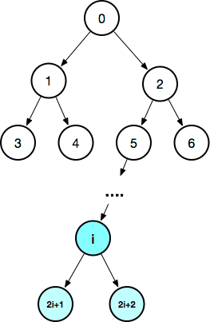
i 的节点对应的：
(i - 1) / 22 * i + 12 * i + 2[0, (n-1)/2]，用于建堆；i，其
i / 22 * i2 * i + 1/**
* Definition for a binary tree node.
* public class TreeNode {
* int val;
* TreeNode left;
* TreeNode right;
* TreeNode() {}
* TreeNode(int val) { this.val = val; }
* TreeNode(int val, TreeNode left, TreeNode right) {
* this.val = val;
* this.left = left;
* this.right = right;
* }
* }
*/
外部变量 + 迭代遍历一遍：对应回溯算法核心框架，简单易懂；
while 遍历每层、并塞入队列，自左向右用 for 遍历每行、将结果加入 List。可扩展出 BFS 算法框架；ArrayList 分别用 addLast()、addFirst()；【】queue 的第一个节点就是右视图。root.right 再递归 root.left，同时用 res 记录每层的最右侧节点作为右视图。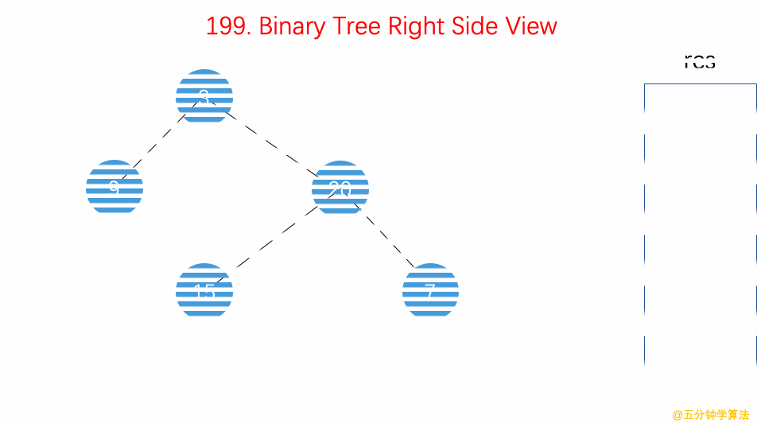
层序遍历框架：

// 层序遍历：1. 非递归用栈实现
public List<List<Integer> > levelOrderTraverse(TreeNode root) {
// 一维结果
// List<Integer> res = new LinkedList<>();
// 二维结果
List<List<Integer> > res = new LinkedList<>();
if (root == null) return res;
Deque<TreeNode> q = new LinkedList<>();
q.offer(root);
// 从上到下遍历二叉树的每一层
while (!q.isEmpty()) {
// depth++; // 深度，初始化为0
int sz = q.size();
List<Integer> re = new LinkedList<>(); // not List new，level，长度可变
// 右视图从右往左遍历，且保存队头（队列中第0个元素）
// TreeNode last = q.peek();
// 从左到右遍历本层的每个节点
for (int i = 0; i < sz; i++) {
TreeNode cur = q.poll(); //
re.add(cur.val); // not offer() push()
if (0 == res.size()%2) { // 奇数层
}
// 二叉树的最小深度
if (node.left == null && node.right == null) {
return depth;
}
// 将下一层节点放入队列
if (cur.left != null) {
q.offer(cur.left);
}
// 从右往左遍历时，right先入队，用于右视图等
if (cur.right != null) {
q.offer(cur.right);
}
}
res.add(re);
// 前插每层的遍历结果，就是自底向上的层序遍历
//res.addFirst(level);
// 用于右视图
//res.add(last.val);
}
return res;
}
// 层序遍历：2. 递归实现
List<List<Integer> > res = new ArrayList<>(); // 需用到get()，not LinkedList
List<List<Integer> > levelOrderTraverse(TreeNode root) {
if (root == null) {
return res;
}
// root 深度为 0，视为第 0 层
traverse(root, 0);
return res;
}
void traverse(TreeNode root, int depth) {
if (root == null) {
return;
}
// 前序位置，判断是否已存储 depth 层的节点
if (res.size() <= depth) {
// 第一次进入 depth 层
res.add(new LinkedList<>());
}
// 前序位置，在 depth 层添加 root 节点的值
res.get(depth).add(root.val);
traverse(root.left, depth + 1);
traverse(root.right, depth + 1);
}
//层序遍历：3. 使用自定义 State 类维护每个节点的信息，复杂一些但最灵活，会在图算法或复杂 BFS 算法中见到
class State {
TreeNode node;
int depth;
State(TreeNode node, int depth) {
this.node = node;
this.depth = depth;
}
}
void levelOrderTraverse(TreeNode root) {
if (root == null) {
return;
}
Queue<State> q = new LinkedList<>();
// 根节点的路径权重和是 1
q.offer(new State(root, 1));
while (!q.isEmpty()) {
State cur = q.poll();
// 访问 cur 节点，同时知道它的路径权重和
System.out.println("depth = " + cur.depth + ", val = " + cur.node.val);
// 把 cur 的左右子节点加入队列
if (cur.node.left != null) {
q.offer(new State(cur.node.left, cur.depth + 1));
}
if (cur.node.right != null) {
q.offer(new State(cur.node.right, cur.depth + 1));
}
}
}
124.二叉树中的最大路径和：递归后序遍历时，计算单边路径和、最大路径和【】
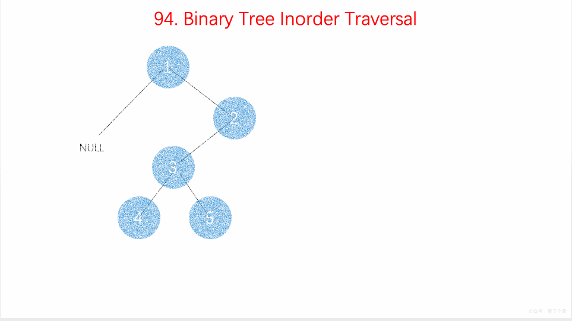
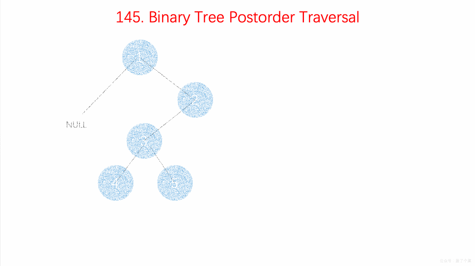
105.根据前序与中序遍历序列构造二叉树：inorderValToIdxMap<> 存储中序序列的值到索引的映射；前序序列 preorder[preStart, preEnd] 确定 root 、左子树 + 右子树的范围，再根据中序序列 inorder[inStart, inEnd] 确定（划分）左右子树的长度，得到左右子树的前序和中序序列，递归；
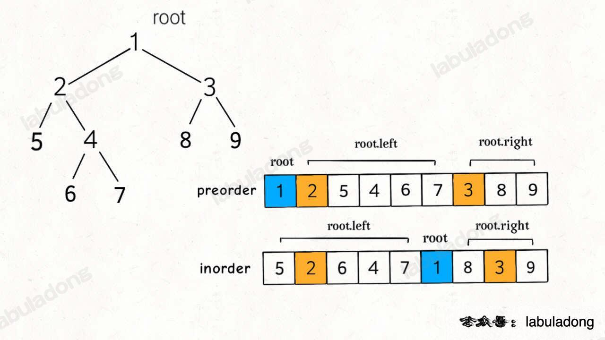
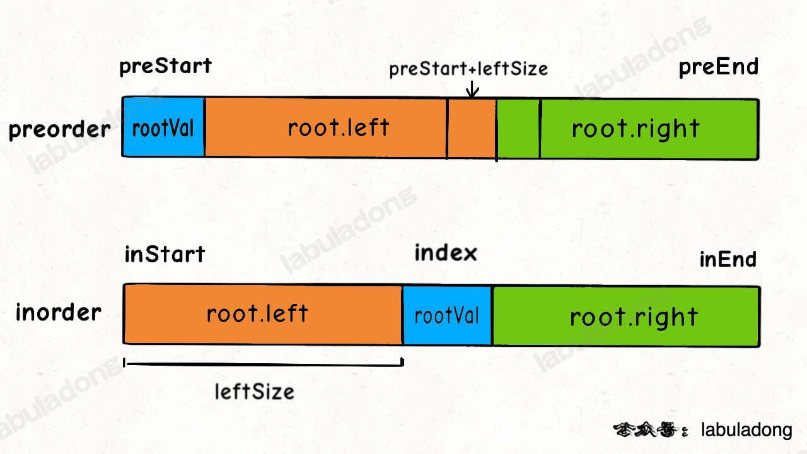
递归框架：
在递归函数中，将当前节点分解为子问题（子树），通过子树的结果推导出当前节点的结果：对应动态规划核心框架；
public List<Integer> preorderTraverse(TreeNode root) {
List<Integer> res = new LinkedList<>();
if (root == null) return res;
// 前序位置：自顶向下、自左向右遍历node、执行代码；
// 从根节点遍历过来的过程能顺带记录前序位置的信息，如节点的深度；
// 快速排序，对前中后序位置不敏感的代码；
res.add(root.val);
res.addAll(preorderTraverse(root.left));
// 中序位置：主要用在 BST 二叉查找树场景
res.addAll(preorderTraverse(root.right));
// 后序位置：自底向上遍历node、执行代码；
// 只有后序位置才能通过返回值获取子树的信息，如树的深度/高度、二叉树的最大深度（即根节点到「最远」叶子节点的最长路径上的节点数）、节点的高度；
// 归并排序、大多数和子树有关的、倒序打印单链表、二叉树的最长直径（即任意两个结点间的路径长度，不一定要穿过根结点=左右子树的最大深度之和+1）
return res;
}
用循环/迭代、中序遍历。
利用线索二叉树的思想，即不再闲置叶子节点的左右指针，比如中序利用叶子节点右指针指向前序遍历情况时的后继节点。在当前节点没有左子树、或者第二次访问节点时即为中序结果。
递归和迭代两种方式是等价的，区别在于递归的时候隐式地维护了一个栈，而在迭代时需要显式地将这个栈模拟出来。
参考：二叉树遍历四种必会算法：递归遍历、非递归遍历、既不用递归也不用栈遍历（三种深度优先），层序遍历（广度优先）
难理解，直接背。
public List<Integer> inorderTraversal(TreeNode root) {
// 中序遍历非栈非递归，中序线索
List<Integer> res = new LinkedList<>();
TreeNode current = root;
while(current != null) {
if(current.left == null) {
// 当前节点没有左孩子，所以是应该访问的结点
res.add(current.val);
// 找右孩子、或者在前面建立的右孩子链接
current = current.right;
} else {
TreeNode past = current.left;
// past一直到最右下
while(past.right != null && past.right != current) {
past = past.right;
}
if(past.right == null) {
// 此时current是past的后继结点，建立链接方便下次找到后继节点
past.right = current;
current = current.left;
} else {
/*
此时past的右孩子指向后继节点，所以是第二次访问；
代表当前结点的左子树已经访问完毕，所以访问当前结点；
然后把指针移到后继或者右子树，并消除多余链接；
*/
res.add(current.val);
past.right = null;
current = current.right;
}
}
}
return res;
}
面试笔试很少出现图相关的问题，就算有大多也是简单的遍历问题，基本上可完全照搬多叉树的遍历。
图（G）由顶点的有穷非空集合（V）和顶点间的边（E）组成，通常表示为：G(V,E)。如社交软件上好友关系。
树和图的根本区别：树不含环，图可能含环。树是一种图，即无环连通图，图是多叉树的延伸。如果图没有环，可拉伸成一棵树。
用途：
表示方法、具体实现、物理结构
邻接矩阵：优点是简单直接（用一个二维数组），可快速判断两点间是否连通，可进行矩阵运算，但（图比较稀疏时）会浪费空间。
邻接表：比较节省空间，但很多操作效率低，如无法快速判断两个节点是否连通。在常规的算法题中使用更频繁。
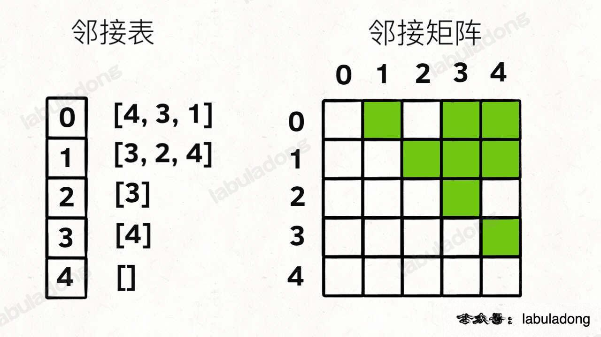
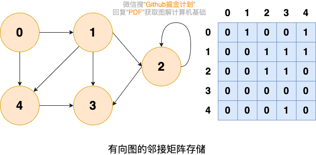
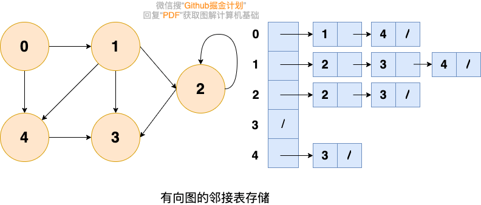
// 邻接矩阵
// graph[x][y] 记录 x 是否有一条指向 y 的边、或边的权重
boolean/int[][] graph;
// 邻接表
// graph[x] = List<Integer> ？存储 x 的所有相邻节点
List<Integer>[] graph;
各种搜索问题其实都是树的遍历问题：
二者最主要的区别是：
depth 每增加一次，队列中的所有节点都向前迈一步，保证了第一次到达终点时，走的步数是最少的，可在不遍历完整棵树的条件下找到最短路径。BFS 空间复杂度比 DFS 大。

// 记录被遍历过的节点
boolean[] visited;
// 记录从起点到当前节点的路径，用于判断是否成环
boolean[] onPath;
// 图的遍历框架：递归实现
void traverse(Graph graph, int s) { // 节点 s
if (visited[s]) return;
visited[s] = true;
// 做选择：标记节点 s 在路径上
onPath[s] = true;
for (int neighbor : graph.neighbors(s)) {
traverse(graph, neighbor);
}
// 撤销选择：节点 s 离开路径
onPath[s] = false;
}
// 记录所有路径
List<List<Integer> > res = new LinkedList<>();
public List<List<Integer> > allPathsSourceTarget(int[][] graph) {
// 维护递归过程中经过的路径
LinkedList<Integer> path = new LinkedList<>();
traverse(graph, 0, path);
return res;
}
// 图的遍历框架：非递归实现
void traverse(int[][] graph, int s, LinkedList<Integer> path) {
// 添加节点 s 到路径
path.addLast(s);
int n = graph.length;
if (s == n - 1) {
// 到达终点
res.add(new LinkedList<>(path));
// 可在这直接 return，但要 removeLast 正确维护 path
path.removeLast();
return;
// 不 return 也可，因为图中不含环，不会出现无限递归
}
// 递归每个相邻节点
for (int v : graph[s]) {
traverse(graph, v, path);
}
// 从路径移出节点 s
path.removeLast();
}
经典算法，学有余力可以掌握一下
图的生成树：生成树是包含图中所有顶点的无环连通子图（无环树）。
最小生成树（MST）：权重和最小的生成树。都用了贪心思想。1584.连接所有点的最小费用【】
Kruskal 克鲁斯卡尔算法：用到了贪心思想，使权重和尽可能小。对所有边按照权重从小到大排序，从权重最小的边开始，选择合适的边加入 mst 集合；如果边的两端点不属于同一集合，则合并，直到所有的点都属于同一个集合为止。实就是 Union Find 算法 + 排序。用并查集算法来保证生成树不含环且不是森林：
Kruskal算法中用来寻找无向图中的连接分量。Prim 普瑞姆算法：核心是切分定理（将图分为两个不重叠且非空的节点集合），每次都把权重最小的「横切边」拿出来，直到把构成最小生成树的所有边都切出来为止。用 BFS 算法思想 和 visited 布尔数组避免成环。，经典算法，学有余力可以掌握一下。
简单图（有向无向皆可）的最短路径 Dijkstra 迪杰斯特拉（戴克斯特拉）算法：注意是长度而不是具体的路径。是 BFS 算法的加强版，都是从二叉树的层序遍历衍生出来。
比较基本且有用的算法，应较熟练地掌握：
有向图的环路检测、循环依赖判断：207.课程表 选修依赖先修【】、二分图判定算法，常用邻接表，DFS 算法遍历图的框架 + visited 数组
拓扑排序（Topological Sorting）：是一个有向无环图所有顶点的线性序列；
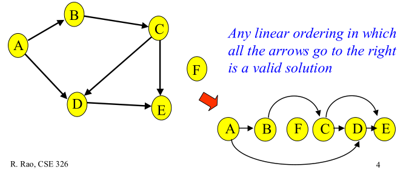
直观说就是，把一幅图「拉平」，且所有箭头方向都是一致的。存在环，则肯定做不到所有箭头方向一致。如返回一个合理的上课顺序，保证开始修每个课程时，前置课程都已修完。实现：
二分图的判定、图论的双色问题：二分图的顶点集可分割为两个互不相交的子集，图中每条边依附的两个顶点都分属于这两个子集，且两个子集内的顶点不相邻。
Union Find 算法：Kruskal 克鲁斯卡尔算法，最小生成树。